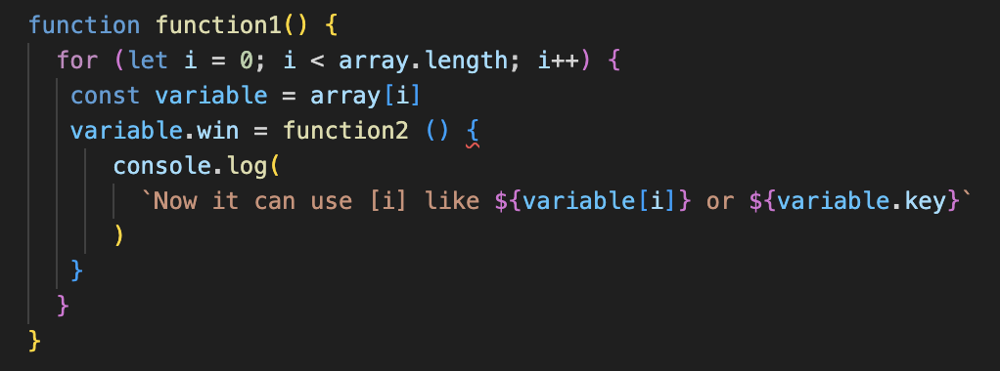

Pseudocode and console.log helped me a lot.
When it's split into small steps, of course it's easier to make it
work, but also the process of splitting the big project made me think
logically and understand the big picture better. In the same vein,
console.log showed me what small things I missed or got wrong.
Personally, I didn't want to ask for help for code itself feeling like I'm asking "give me the answer", so when I couldn't figure out for an hour, I used chatGPT and studied that code which was found not a good answer and I could have spent time studying better answer instead. Less reluctance to ask for help would save my time!